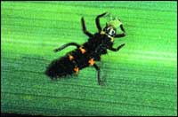

Naughty, Nice Or Neutral
Naughty, nice or neutral? Lady beetles, commonly known as lady bugs are a multi-purpose beneficial insect.
By the Mother Earth News editors
October/November 2004
Ladybugs, as many of us know from reading garden stories, are the embodiment of the natural gardening ideal. They’re members of the colorful coleopteran (beetle) family that seems to be such a help to human gardeners, except for two family members that detract decidedly from the clan’s “wholly natural” reputation: Of more than 450 species in the lady beetle family in North America, only the Mexican bean beetle and the squash beetle fail to live up to the do-good reputation of their relatives. These two are actually eaters of vegetation; the rest focus entirely on the consumption of aphids, thrips, mites, scales and other tiny pest creatures. Both adults and larvae have strong appetites, too, so we humans get to stand on the sidelines (what a relief to not have to do anything!) and be cheerleaders for the insects that are actually on our team.
For low-level populations of such pests as aphids on apple trees, I just wait for the ladybugs to show up. They do an admirable job. If an infestation is particularly heavy and ladybugs are sparse, insecticidal soap spray can help bring such pests under control. To maintain a healthy local population of ladybugs, though, grow some flowers in your garden, especially composites such as daisies and asters. The ladybugs will forage on the nectar and pollen in the flowers’ blooms.
The commercially available “convergent lady beetle,” Hippodamia convergens, can lay up to 1,000 eggs per summer, but also has a strong dispersal habit, which means it doesn’t hang around in big groups anywhere. A ladybug release works best if lots of food insects are available, but it’s difficult to wait and see if an avalanche of aphids appears before mail-ordering the ladybugs. To discourage their habit of dispersing quickly if you do buy a batch, purchase beetles that have been fed previous to sale, and when they arrive, release them on a wetted area at night.
The multi-colored Asian lady beetle, Harmonia axyridis, was imported from Japan more than 80 years ago to fight North American insect pests. By the 1990s, the beetle began to increase in numbers, and in just the last six years, reports from all over the United States and Canada have shown that the insect’s population is greatly expanding in number.
They are more noticeable, too, because they use human residences as their hibernation sites. These lady beetles seem to prefer the southwest side of light-colored houses. They will use any crack to gain entrance to attics, basements and other sheltered places to hide in through the winter.
If their hiding place is not heated, the beetles cluster together; on unseasonably warm days, many become active and if enough are present, they can be a real nuisance when they appear inside the home. They do no harm, though, and eventually die from exhaustion, trying to escape.
Some traps have been developed to help remove such lady beetles from a building without killing them (visit www.gardeners.com and www.cooperseeds.com). - John Stuart
 An adult Asian lady beetle. |
 A lady beetle larva, which appears in summer. |
|